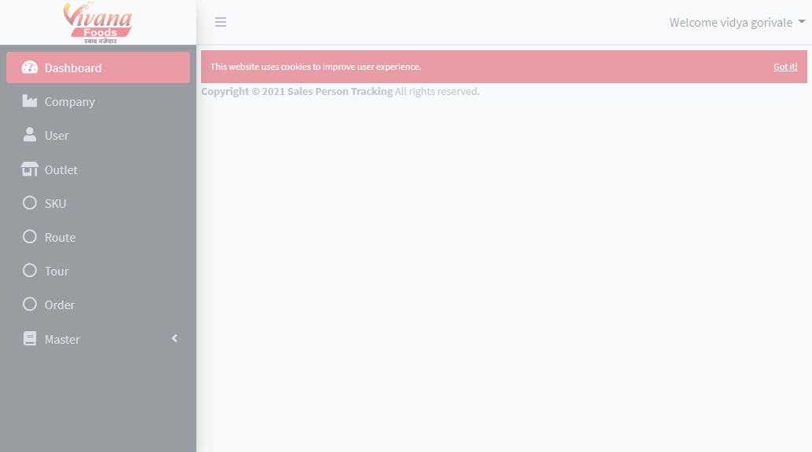
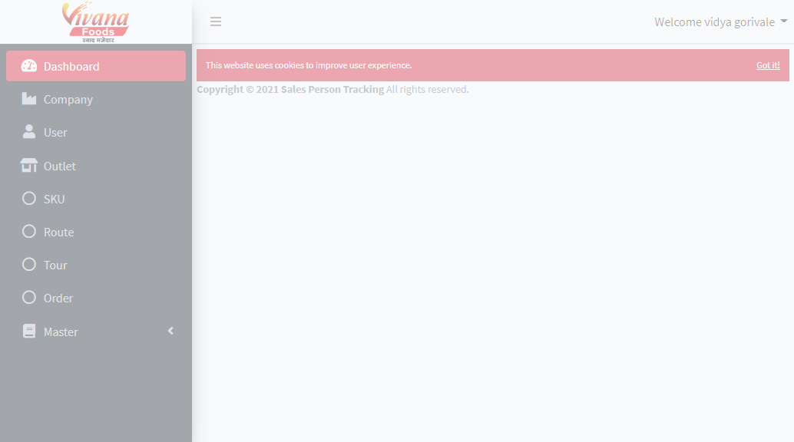

-
Adding data from Excel to Route
0h 0m 21s+152ms
17:35:19 pmAdding data from Excel to Route
08.19.2021 17:35:19 08.19.2021 17:35:40 0h 0m 21s+152msData will be added from excelData will be added from excelGiven user has logged into applicationid username password 24sz-075o-21T6 dis1 12345 Given user has logged applicationWhen user clicks on Get Routes buttonStep skippedThen user clicks on Add buttonStep skippedThen User fills the data from given sheetName "Sheet1" and rowNumber 0Step skippedThen it shows successful message "Route details added successfully"Step skippedAppHooks.ApplicationHooks.tearDown(io.cucumber.java.Scenario)Data will be added from excelGiven user has logged into applicationid username password 24sz-075o-21T6 dis1 12345 Given user has logged applicationWhen user clicks on Get Routes buttonStep skippedThen user clicks on Add buttonStep skippedThen User fills the data from given sheetName "Sheet1" and rowNumber 1Step skippedThen it shows successful message "Route details added successfully"Step skippedAppHooks.ApplicationHooks.tearDown(io.cucumber.java.Scenario)
-
io.cucumber.core.exception.CucumberException
2 tests
io.cucumber.core.exception.CucumberException
Status Timestamp TestName 17:35:26 pm Given user has logged application Data will be added from excel17:35:40 pm Given user has logged application Data will be added from excel
Features
Scenarios
Steps
Features
1
.00%Scenarios
2
.00%Start
Aug 19, 2021 17:35:12
Duration
0h 0m 29s+461ms
Timeline
Environment
| Name | Value |
|---|---|
| AppName | EzyTracker |
| user | Geo |
| build | 1.1 |
| os | Windows 10 |